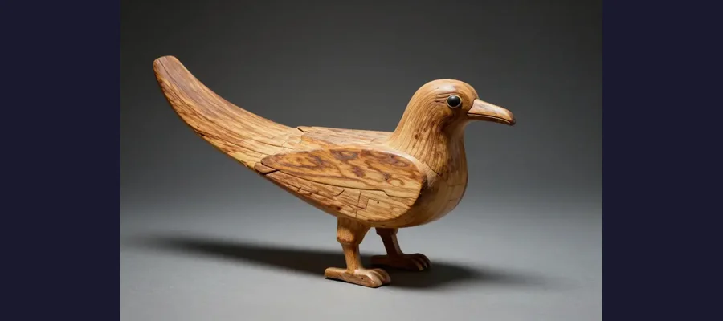

The Saqqara Bird: Did Ancient Egyptians Understand Flight?

This 2,200-year-old wooden bird has puzzled archaeologists for decades. Could the ancient Egyptians have understood aerodynamics?
In 1898, archaeologists excavating a tomb in Saqqara, Egypt, found something unexpected: a small wooden bird model, about 15 centimeters (6 inches) across. At first glance, it looked like a simple toy. But when aviation experts examined it decades later, they noticed something remarkable — this little bird had the aerodynamic features of a glider.
The Saqqara Bird, as it came to be known, has since sparked fierce debate. Did the ancient Egyptians understand the principles of flight 2,000 years before the Wright Brothers? Or is it just a decorative object that happens to look airworthy?
Overview
What Makes This Bird Special?
The Saqqara Bird is carved from sycamore wood and dates to approximately 200 BCE, during the Ptolemaic period of Egyptian history. It was discovered in the tomb of Pa-di-Imen, an Egyptian official.
What caught experts’ attention were its unusual design features:
- 🦅 Dihedral wings — angled upward like modern aircraft wings for stability
- 📐 Vertical tail fin — similar to an airplane’s vertical stabilizer
- 🔄 Asymmetrical airfoil — curved on top, flatter on the bottom, like a modern wing
- ⚖️ Center of gravity positioned for stable flight

From the side, the bird’s airfoil shape and vertical tail fin are clearly visible — features that echo modern aircraft design.
✈️ Flight Test Results
In 2006, aviation expert Simon Sanderson built a scaled-up replica of the Saqqara Bird and tested it in a wind tunnel. The results were surprising: the model produced four times less drag than a flat board of the same size, and it demonstrated genuine aerodynamic lift!
The Context
The ancient Egyptians were masterful engineers. They built pyramids with mathematical precision, created massive obelisks that still stand today, and developed sophisticated construction techniques that modern engineers still study.
However, there’s a big difference between understanding basic aerodynamic shapes and actually building flying machines. The Saqqara Bird could simply be a stylized representation of a falcon — a sacred bird in Egyptian religion — created by an artist who paid close attention to how real birds look in flight.
Evidence
Arguments for Ancient Flight Knowledge
Proponents of the “ancient flight” theory point to several pieces of evidence:
📐 Mathematical precision: The bird’s proportions match aerodynamic principles more closely than would be expected from a simple artistic carving.
📜 Historical texts: Some researchers cite ancient Egyptian texts that describe the god Horus flying through the sky, suggesting the concept of controlled flight existed in Egyptian imagination.
🏛️ Engineering capability: The Egyptians demonstrated advanced understanding of physics through their architectural achievements — is it so far-fetched they understood basic aerodynamics?
The vast necropolis of Saqqara, where the bird was found, contains thousands of years of Egyptian history buried beneath the desert sands.
Competing Explanations
Toy, Ritual Object, or Prototype?
🎲 A child’s toy: The simplest explanation is that it was a toy or boomerang. Ancient Egyptian children played with many animal-shaped objects, and some of those toys had naturally aerodynamic shapes.
🙏 A religious artifact: The bird may represent Horus, the falcon-headed sky god. The vertical tail fin might represent a ritual headdress or decoration, not an aerodynamic feature.
💡 A wind vane: Some researchers suggest it could have been mounted on a pole and used as a weather instrument to determine wind direction on ships.
🏛️ Where Is It Now?
The Saqqara Bird is on display at the Egyptian Museum in Cairo. It’s exhibited alongside other artifacts from the Saqqara excavations and continues to draw curious visitors who wonder about its true purpose.
Open Questions
The Verdict
Most mainstream archaeologists consider the Saqqara Bird a decorative or ritual object whose aerodynamic features are coincidental. They point out that no evidence exists of ancient Egyptian aircraft, runways, or aviation technology.
However, the debate continues. The bird’s design features are undeniably aerodynamic, and wind tunnel tests have shown it can generate lift. Whether this was intentional knowledge or a happy accident of artistic skill remains one of archaeology’s most intriguing questions.
The Saqqara Bird reminds us that ancient civilizations were far more sophisticated than we often assume — and that sometimes, a small wooden object can ask bigger questions than the pyramids themselves.
📖 Recommended Reading
Want to learn more? Check out Saqqara Bird by David Myhra on Amazon for a deeper dive into this fascinating topic. (As an Amazon Associate, we earn from qualifying purchases.)
References & Further Reading
- Wikipedia: Saqqara Bird overview
- JSTOR: Aerodynamic analysis of the Saqqara Bird (academic study)
- ScienceDirect: Ancient Egyptian engineering and technology
Editorial note: the purpose of the Saqqara Bird remains debated among Egyptologists and aviation historians. See our Editorial Policy.